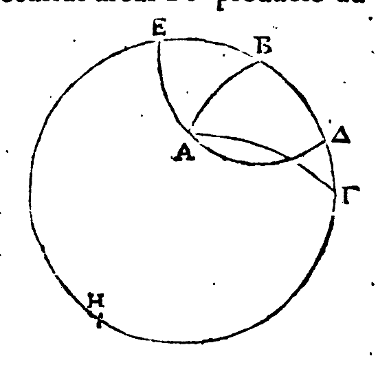

Proposition I.5 — Theorem: Spherical Triangle Inequality¶
Menelai Alexandrini Sphaericorum Lib. I Prop. V. Theor. (Halley 1758, pp. 6–7)


Enunciation (Halley 1758, p. 6)
Any two arcs of any spherical triangle taken together are greater than the remaining arc.
Let \(\triangle \mathrm{AB\Gamma}\) be a spherical triangle: I say that any two arcs of the three \(\mathrm{AB}, \mathrm{B\Gamma}, \mathrm{\Gamma A}\) comprehending it, taken together, are greater than the remaining arc.
Let \(\widehat{\mathrm{B\Gamma}}\) be the greatest of the remaining arcs; and with pole \(\mathrm{B}\) and radius \(\mathrm{BA}\) describe circle \(\mathrm{A\Delta E}\), meeting arc \(\mathrm{B\Gamma}\) produced at \(\mathrm{E}, \mathrm{\Delta}\). Now because \(\mathrm{B}\) is the pole of circle \(\mathrm{A\Delta E}\), and arc \(\widehat{\mathrm{B\Gamma}}\) is less than a semicircle, point \(\mathrm{\Gamma}\) will not lie at the opposite pole of circle \(\mathrm{A\Delta E}\). Let that opposite pole be point \(\mathrm{H}\). Since therefore segment \(\mathrm{\Delta\Gamma H}\), cut off from point \(\mathrm{\Delta}\), is erected upon the diameter of circle \(\mathrm{A\Delta E}\), and arc \(\widehat{\mathrm{\Delta H}}\) is equal to arc \(\widehat{\mathrm{HE}}\), while arc \(\widehat{\mathrm{\Gamma\Delta}}\) is less than \(\widehat{\mathrm{\Delta H}}\), the straight line drawn from \(\mathrm{\Gamma}\) to \(\mathrm{\Delta}\) will be shorter (by Theodosius III.1) than any other straight line drawn from point \(\mathrm{\Gamma}\) to the circumference of circle \(\mathrm{A\Delta E}\): therefore the join \(\mathrm{\Gamma A}\) is greater than the join \(\mathrm{\Gamma\Delta}\); and consequently arc \(\widehat{\mathrm{A\Gamma}}\) is greater than arc \(\widehat{\mathrm{\Gamma\Delta}}\). But arc \(\widehat{\mathrm{AB}}\) is equal to arc \(\widehat{\mathrm{B\Delta}}\); wherefore the two arcs \(\widehat{\mathrm{BA}}, \widehat{\mathrm{A\Gamma}}\) exceed the two
f. 0023 · p. 7arcs \(\widehat{\mathrm{B\Delta}}, \widehat{\mathrm{\Delta\Gamma}}\), that is, \(\widehat{\mathrm{B\Gamma}}\): wherefore any two arcs comprehending the spherical triangle \(\triangle \mathrm{AB\Gamma}\) taken together are greater than the remaining arc. Quod erat demonstrandum.